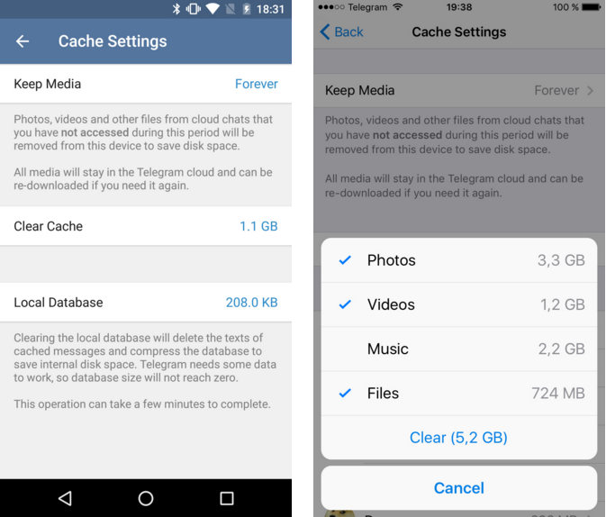
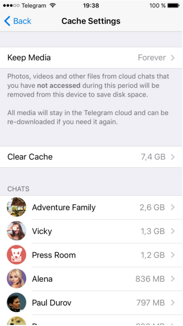
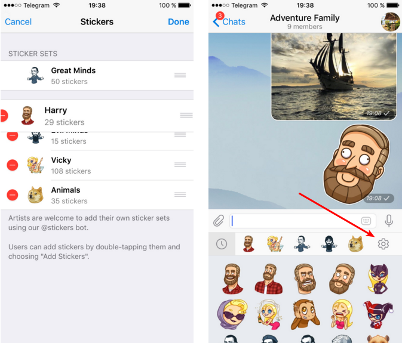

首頁 >
官方新聞 > 清除快取資料和重新排列貼圖集（原文）
不像大多數即時通訊軟體，Telegram 能夠在您的手機上幾乎不佔用空間，即使您大量使用它。當您從裝置的快取中刪除 telegram 數據以騰出空間，我們仍會在雲端中保存它，只要您需要，幾乎沒有任何限制。
今天，我們推出了新的快取管理選項，讓您在空間不足時，更容易維持 Telegram 只佔用微小的儲存空間 - 而不必犧牲有用的數據。新的清除快取選項允許您快速地按類型刪除快取的媒體。

使用「保留媒體」設定，您可以控制未再使用的媒體在您的裝置上可以保留多久的時間。如果您在指定的時間內沒有存取某一檔案，它會自動從快取中被刪除。當然，您再次存取數據的那一刻，它將立即從雲端重新下載。
在 iOS 上，您也可以用聊天室為單位，一個一個清除快取的檔案。在 Android 上，這個方式目前只可以用於「超級群組」和「頻道」（只需要在聊天室清單中，點擊並按住要清除快取數據的對象，然後選擇「從快取中刪除」。如果您選擇的對象為「一般聊天室」或「一般群組」，則是顯示「清除聊天紀錄」喔！要小心！）。

適用於 iOS 版和 Android 版 Telegram（還有即將更新的 WindowsPhone 版），這些簡單的設定有助於確保 Telegram 在您的裝置上只需要很少的空間。
重新排列貼圖
我們還改善了貼圖集的順序。現在，您可以用您喜歡的順序手動排列您的貼圖集，並且這個順序將在您的裝置間進行同步。透過新的按鈕存取「貼圖設定」，按鈕在貼圖面板上的右邊。

我們2015年的發布還沒有完成，所以請留意過年前，還會有更新。
2015年12月8號
電報團隊